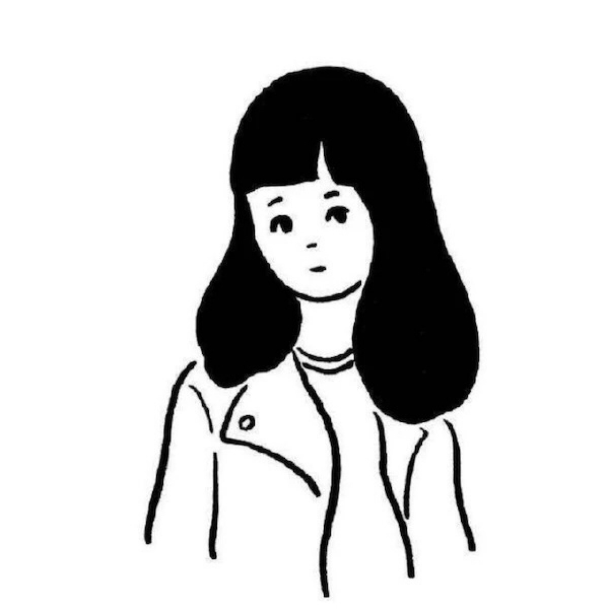
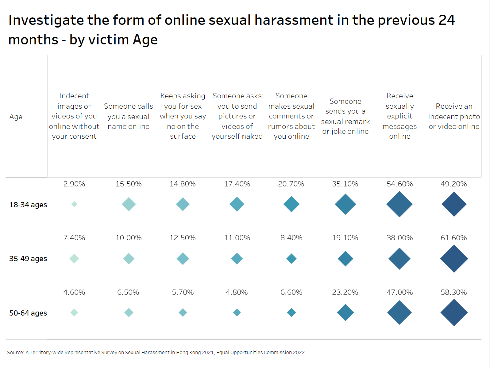
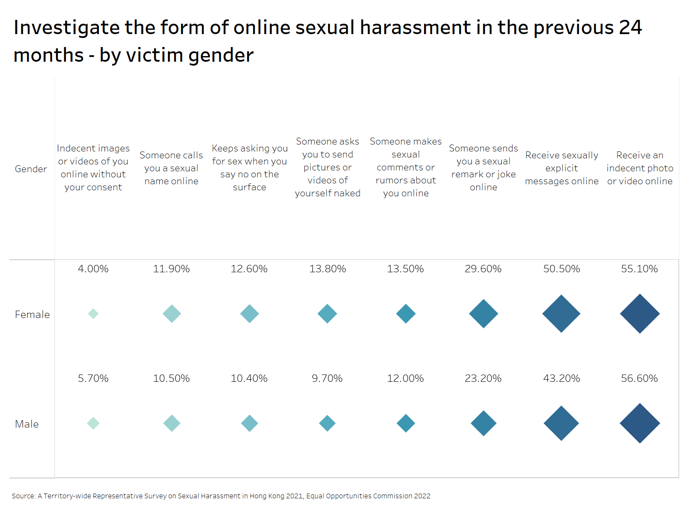
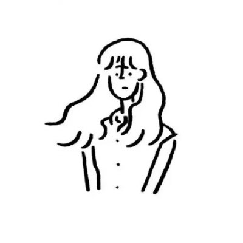
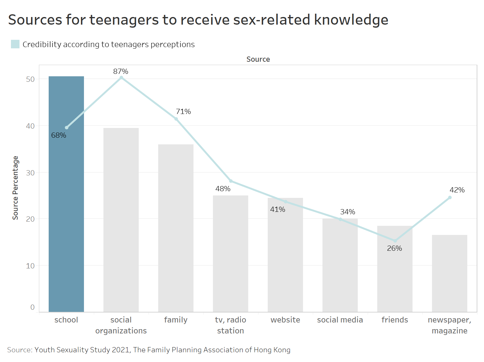
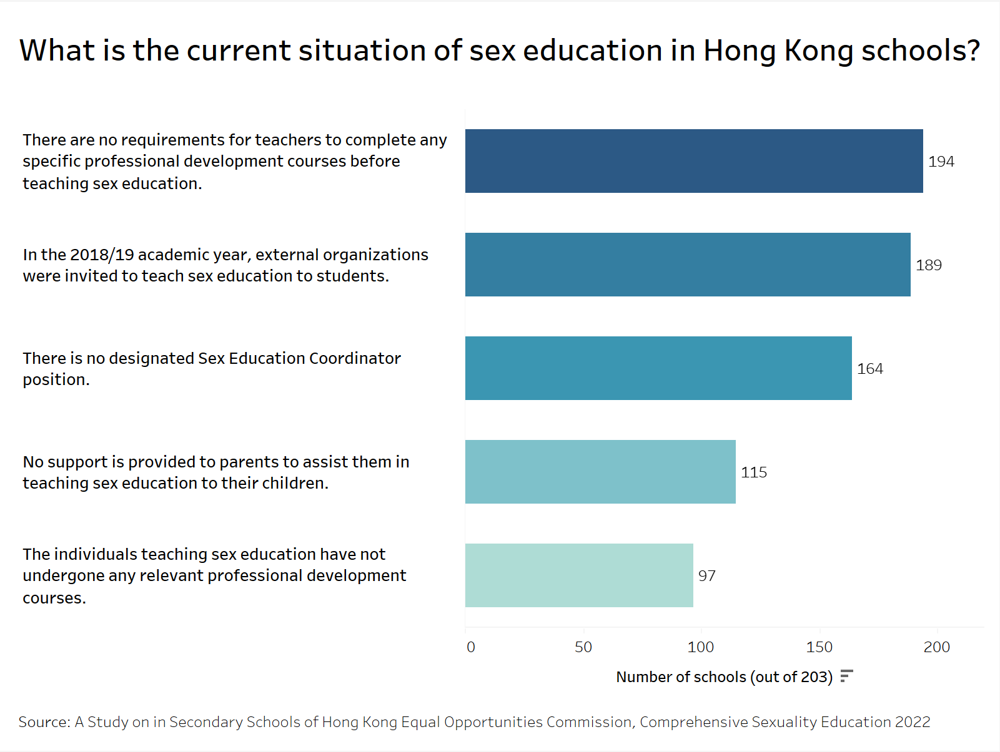
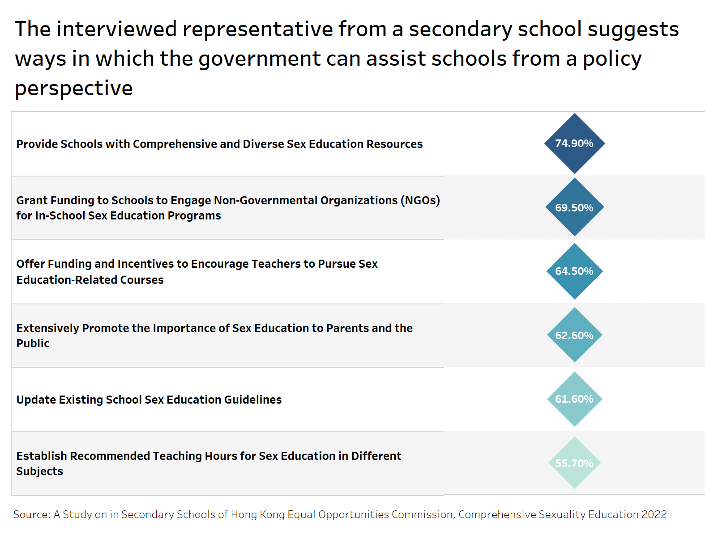

Breaking the silence: Teenage Sexual Harassment in the Digital Age
A disconcerting message pops up on the Snapchat of a sixteen-year-old girl in Hong Kong—it's an explicit image from a man, accompanied by an unsettling text.
The girl, nauseated by the sight, quickly deletes him but knows with a heavy heart that such intrusions are far from over.
"Countless times, these images have invaded my privacy, often blindsiding me," she said.
Her ordeal is not an anomaly. It shows a troubling trend of online sexual harassment that is weaving into the social fabric of Hong Kong, alongside the more recognized sphere of offline harassment.
“Countless times, these images have invaded my privacy, often blindsiding me.”
—  A form 4 girl student, Lam
Hong Kong sexual harassment reached peak in 2023

.
The number of indecent assault cases in Hong Kong kept raising since 2022, according to the number released by Hong Kong Police Force. The case number reached peak in 2023, as there were 1,162 times in a year that women were assaulted in the public space.
Not only the official case number recorded by the police, complaints regarding the sex discrimination received by Equal Opportunities Commission (EOC) also seen a steady growth since 2017. In 2023, there were 387 sex discrimination complaints from the public, according to the data from EOC’s website.

.
The Hong Kong Equal Opportunity Commission conducted a comprehensive survey on sexual harassment in Hong Kong in 2021, releasing their findings in a territory-wide representative report. The report highlights the Sexual Harassment Awareness Index, which provides insights into the perception of sexual harassment among different age groups. The data indicates that younger respondents demonstrated a higher awareness of sexual harassment compared to older age groups.
According to the survey, the mean SHA Index score for all respondents was 80.26, reflecting a generally high level of awareness across the population. However, there were variations depending on age. The findings revealed that respondents aged 18-24 had the highest SHA Index score, averaging 84.53. In contrast, respondents aged 60-64 scored lower, with an average SHA Index score of 76.53.
To further analyze the data, the standard deviation was examined as a measure of dispersion. A higher standard deviation indicates a greater spread of data. The graph illustrates that respondents aged 60-64 exhibited a higher spread of awareness on this topic, with a standard deviation of 20.07. In contrast, respondents aged 18-24 displayed a lower spread, with a standard deviation of 13.43.
The results suggest that younger individuals in Hong Kong possess a heightened perception of sexual harassment. However, it is important to note that this awareness does not imply they are immune to experiencing such harassment in their daily lives.
Prevalence of online sexual harassment
With the popularization of the Internet, the problem of online sexual harassment is becoming more and more serious.
According to the A Territory-wide Representative Survey on Sexual Harassment in Hong Kong 2021 published by the Equal Opportunities Commission, one in six participants acknowledged encountering sexual harassment in digital spaces within two years before the survey, out of the 4,698 individuals surveyed.
The data delineates a troubling trend skewed toward youth. Nearly a quarter (23.3%) of the aged 18-34 respondents encountered such incidents, in comparison, the figures for the senior age group were lower.

.
Gender analysis further illustrates the prevalence of the issue, the reports show more men (18.3%) than women (17.3%) claimed to have been sexually harassed online.
“I feel shame when I think about discussing the man who keeps pestering me for my private photos. I knew something was wrong, but I didn't know who to turn to,” said a 15-year-old boy. He revealed receiving harassing messages from a male while engaging in a football forum online.
“Despite blocking this person multiple times, he continues to contact me through different accounts, making me feel powerless,” he added.
“I feel shame when I think about discussing the man who keeps pestering me for my private photos. I knew something was wrong, but I didn't know who to turn to.”
—  A 15-year-old boy
A 15-year-old boy
The highest reported rates of online sexual harassment were among women aged 18 to 34. For men in the same age bracket, the figure stands at 20.4%, higher than those in senior age groups.

.
Different forms of online sexual harassment
In order to further explore whether there are differences in the forms of online sexual harassment suffered by different groups, data showed there are also age differences.

More than half of younger respondents have received Offensive and sexually suggestive messages (54.6%). One-third of them had experienced comments or rumors of a sexual nature about them online (35.1%), compared to 19.1% of older respondents.

Men and women experienced roughly the same forms of online sexual harassment, with the most common form being receiving an indecent photo or video online.
Female respondents have a greater chance of becoming victims, and women have significantly higher figures than men in receiving messages with sexual connotations, pornographic jokes, and requests to send private photos.
Tracy, a 20-year-old university student, recounts enduring a distressing array of online sexual harassment, manifesting in various forms. From receiving sexually explicit messages to enduring persistent sexual advances despite her clear refusals, she has felt profoundly violated. Moreover, comments about her body and lewd remarks have further compounded her distress.
Once she got a message from a man who said, “I saw you today”, this man had already persistent comments about her body under the post for a long time, which made her feel creepy.
Sexual harassment screenshots from Instagram. Source: Tracy
“This led me to reduce the frequency of my posts, If I updated frequently, I could receive about five people sending sharass messages or comments once a week,” Tracy said. The fear of attracting further unwanted attention has forced her to reconsider how much she shares about her personal life online, fearing the loss of privacy.
The impact of online harassment extends beyond the digital realm, seeping into Tracy's offline life and deepening her distrust of men.
“Overwhelmed by this kind of message, making me feel that the men I meet in real life will also use erotic eyes to examine me, which makes me feel very uncomfortable, I don't even want to fall in love.”
“Overwhelmed by this kind of message, making me feel that the men I meet in real life will also use erotic eyes to examine me, which makes me feel very uncomfortable, I don't even want to fall in love.”
—  University student, Tracy
Teenager’s online sexual harassment
In the same report by Equal Opportunities Commission, students, comprising 26% of the demographic, emerged as the most vulnerable group to online sexual harassment attacks, followed by unemployed individuals at 21% and working professionals at 17%.

.
In a separate study conducted in 2022 by Save the children, a comparison was made between the prevalence of sexual harassment online and offline among teenagers. After receiving 1,097 responses from secondary school students and 249 responses from primary school students, the research indicated that teenagers commonly face verbal harassment when they go online, emphasizing the prevalence of online sexual harassment in the 21st century.

.
In regards the accessibility of sexual information, the Family Planning Association of Hong Kong surveyed separately among teenage boys and girls in the same report in 2022. and found that nearly 17.3% of female teenagers have received sexual related information online, while male students reported a higher frequency, which was 23.9%.

.
Among those teenagers receiving the sexual information online, the data recorded that the male teenagers had higher tendency of getting in touch with sex information online. While 11% boys received sex information almost every day, girls reported a lower possibility of being exposed to sexual related content every day and the percentage was 2 times lower than the boys.

.
On the other side, the association also checked the status of students sending sexual information online. The results showed that part of Hong Kong teenagers have reported sending sex content online. While not much (5%) of girls, boys had a higher record (11.3%) of disseminating adverse information online.

.
Hong Kong Sexuality Education
One of the reasons for vulnerability may be the inadequacy of sex education and lack of knowledge about sex for teenager.

The Family Planning Association of Hong Kong conducted a Youth Sexuality survey in 2021, part of the survey asked 8343 Form 1-6 Hong Kong teenagers about the main sources of them learning sex-related knowledge. According to the data results, over 50% of Hong Kong youth learned sex knowledge through schools, while the rest sources were social organizations, family and TVs.
However, while schools were being the most common source for Hong Kong teenagers to receive sexual knowledge, students did not perceive it as the most credible source.
Seeing from the data released by the Family Planning Association of Hong Kong, students thought school was only 68% credible, while social organization ranked as the highest credibity with 87% percent.
This has revealed a problem of Hong Kong sexuality education, that schools are not playing its role in teaching sex-related knowledge very properly, while other organizations, like social organizations and family did a better job.
According to the Comprehensive Sexuality Education in Secondary Schools of Hong Kong published by the Equal Opportunities Commission, nearly half (49.7%) of the secondary school representatives surveyed considered the current sex education in secondary schools to be inadequate.

80.8% of secondary schools lack a designated Sex Education Coordinator, leaving a gap in comprehensive sexual health education. Instead, the burden often falls on external organizations.
Compounding the issue, a concerning 56.7% of secondary schools fail to provide support for parents to educate their children about sex, further exacerbating the gap in knowledge.
“I try to avoid discussing sex with my son, mainly because I don't know how to guide him properly,” said Jessica Cheung, a secondary school boys' mom.
Even in schools that offer sex education, only 4.7% of staff have received professional development in the area, and 95.3% don't require any relevant training before teaching sex education. This oversight raises concerns about the accuracy and comprehension of sexual health information provided to students.
“As a mother, I think schools should offer professional sex education courses to children. It's a crucial aspect of their growth, not just for safeguarding others, but also for teaching them how to protect themselves. They need the right guidance to make informed decisions about their bodies and relationships,” Cheung added.
“As a mother, I think schools should offer professional sex education courses to children. It's a crucial aspect of their growth, not just for safeguarding others, but also for teaching them how to protect themselves. They need the right guidance to make informed decisions about their bodies and relationships.”
—  a secondary school boys' mom, Jessica
a secondary school boys' mom, Jessica
Future Suggestions

The data suggests a strong consensus among secondary schools on the strategies that could furnish teenagers with more comprehensive sexual knowledge through improved educational policies and resources to keep them safe.
Around three-quarters of schools urge the government to provide diverse, engaging teaching materials for sex education. Additionally, nearly 70% advocate for government subsidies to facilitate partnerships with NGOs for on-site educational programs, reflecting a strong preference for expertise led instruction.
Over 60% of schools calling for updated guidelines that reflect current digital challenges and a similar percentage recommending public awareness campaigns to highlight the importance of sex education.
Furthermore, to solve the problem of lack of professional teacher in this area, about 65% of schools see the value in financially supporting teachers to pursue specialized training in sex education.
The findings show a disconnect between the delivery and reception of sexual education. Therefore, educational bodies, parents, and governmental agencies may step up to tackle the challenges, ensuring that the younger population is well-equipped to navigate and safeguard themselves in this evolving landscape.